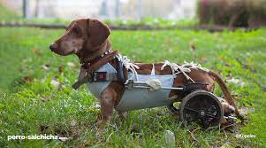
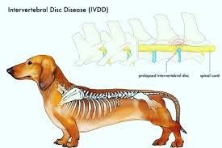
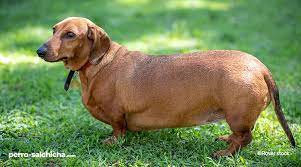

Dachshund Lover

Cuidados

Aunque no son propensos a sufrir enfermedades, esta raza acostumbra a tener problemas de salud hereditarios relacionados con la espina dorsal, provocados porque su columna vertebral es demasiado larga y sus costillas son cortas. Es por eso por lo que deberemos presentar especial atención a la forma en la que sujetamos a nuestro Dachshund. Debemos sujetar sus extremidades y espalda a la vez, colocando una mano bajo su pecho manteniendo así su cuerpo nivelado.

Aparte de la columna, las zonas que más pueden verse afectadas en el cuerpo del Dachshund son las rótulas ,con la luxación patelar que produce, entre otras cosas, cojera.

No deben ser sobrealimentados pues esta raza tiende a ganar peso rápidamente.